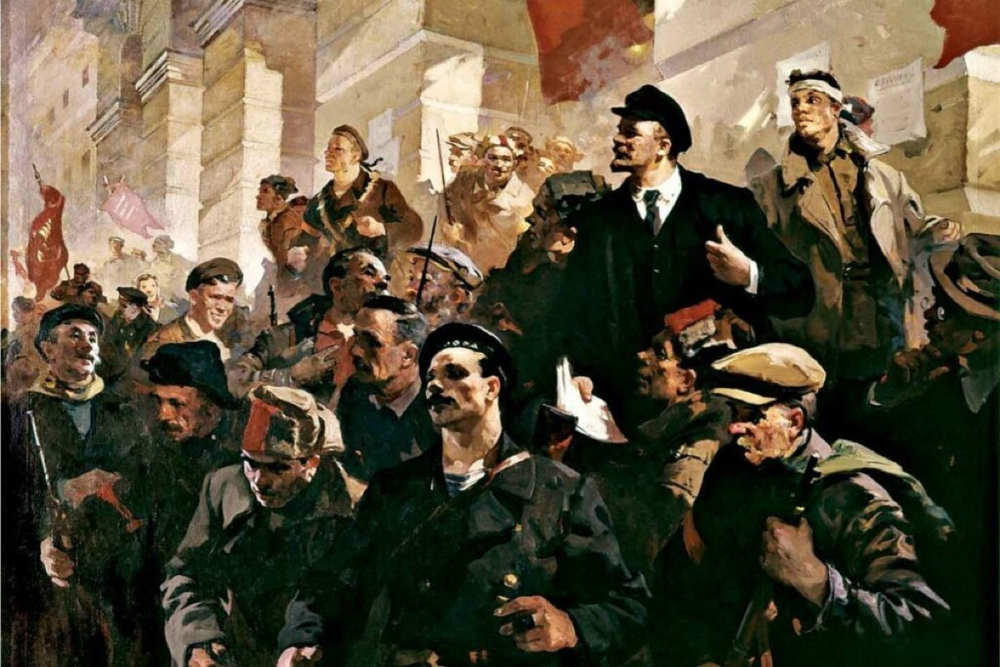
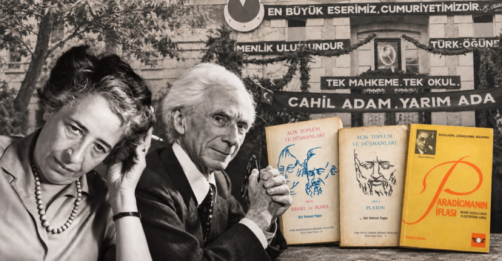
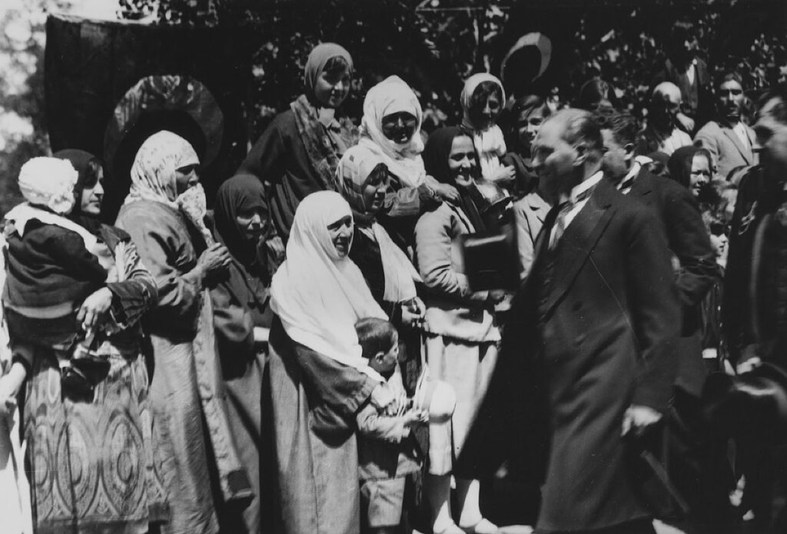

Gündeme Yönelim
Böyle Buyurdu Obama
Geçtiğimiz haftalarda dünyanın dört köşesinde milyonlarca insan 17 Kasım’da yaşanacak büyük felaketi bekledi. İddiaya göre küresel çapta bir “blackout”, yani elektrik ve iletişim kesintisi yaşanacak, banka hesaplarımıza…
Oğul Tuna · 19 Kasım 2026 · 4 dk okuma

Durun, Siz Kardeşsiniz!
Azerbaycan ve Türkiye arasındaki gerilim, şu an için, yatışmışa benziyor. Bunda Erdoğan’ın, gelecek seçimlere ve bölgesel çıkar ağlarına bağlı olarak siyasî ve ekonomik vaziyeti gözeterek, Bakü’den daha itidalli ve…
Oğul Tuna · 15 Kasım 2026 · 2 dk okuma

Atatürk Nostaljiyle Değil, Devrimcilikle Anılır
Atatürk’ü bugün nasıl anmalıyız? Millî Mücadele’nin muzaffer komutanı olarak mı? Türkiye Cumhuriyeti’ni kuran “devlet adamı” olarak mı? Savaştan sonra çevresinde barış iklimini inşa etmeye çalışan kurucu bir diplomat…
Emrah Maraşo · 14 Kasım 2026 · 3 dk okuma

Mirası Olmayan Adam
Feodaliteyi çok seviyoruz. Her birimiz kendi bildiği, sevdiği biçimlerde feodaliteye bayılıyor. “Miras” çok olumlu bir kavram aslında. Mesela, suç miras kalmıyor; öyle şeyler redd-i miras oluyor. Mirastan sayılmıyor…
Onur Gerey · 14 Kasım 2026 · 3 dk okuma

Nükleer Tehdit
Acayipleşti havalar, bir güneş, bir yağmur, bir kar. Atom bombası denemelerinden diyorlar. Stronsium 90 yağıyormuş ota, süte, ete, umuda, hürriyete, kapısını çaldığımız büyük hasrete. Kendi kendimizle yarışmadayız,…
Oğul Tuna · 8 Kasım 2026 · 2 dk okuma

Ekim Devrimi’nden Bazı Çıkarımlar
1917’nin 7 Kasım günü bilimsel sosyalizm bütün ağırlığıyla tarihin sahnesine çıktı. İşçilerin, köylülerin ve askerlerin öncü partisi olan Rusya Sosyal Demokrat İşçi Partisi (Bolşevik) iktidarı burjuvazinin elinden söküp…
Emrah Maraşo · 8 Kasım 2026 · 2 dk okuma

Kum Yığını mı “Büyük İnsanlık” mı?
Bizdeki Eski Rejim’in ya da Nizam-ı Kadim’in veya Eski Türkiye’nin düşmanlarının argümanları ve fikir önderleri çoktu. Bugün dünyada antientelektüelizmin haklı gelişimiyle ve elbette Türkiye’de bırakın kadimini…
Oğul Tuna · 29 Ekim 2026 · 3 dk okuma

Trahomla Savaştan Türk Lirasını Kurtarmaya: Cumhuriyetçilik, Bugün Yeniden…
Türkiye’de Cumhuriyet, bağımsızlık savaşı ile devrimin birleştiği tarihi bir kavşaktı. Bu kavşağın niteliklerine dair çok şey yazılabilir, söylenebilir. Fakat bu yazıda Cumhuriyet’in araştırmalara ve analizlere pek…
Cangül Örnek · 29 Ekim 2026 · 5 dk okuma

Cumhuriyet ve Demokrasinin Gerçek Anlamı
Her şey tarihseldir. Peki, bu ne demek? Tarihin dışında, toplumsal ilişkilerin ve sınıf mücadelesinin dışında bir süreç yoktur. Bu birincisi. İkincisi, biz bu tarihsel sürecin içindeki olanaklar ve sınırlılıklarla…
Emrah Maraşo · 29 Ekim 2026 · 5 dk okuma
